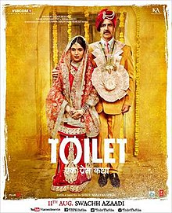

A VISIT TO THIS TOILET IS A MUST
STORY: Go-getter Keshav (Akshay) serenades liberal-thinker Jaya (Bhumi), a woman from his neighbouring village in Uttar Pradesh. They marry but it doesn’t strike Keshav to tell her that his house doesn’t have a toilet. This then becomes the grounds for Jaya to file for a divorce.
REVIEW: For most of us who take the toilets in our homes for granted, the burning issue of 58% Indians practising open defecation could be a flush-worthy concept. But, director Shree Narayan Singh holds up a mirror to society, showing us how our superstitious villagers, lazy administration and corrupt politicians have actually converted India into the world’s largest shit-pond. Women especially, are treated more insensitively than cattle!
This film is a satirical take on the age-old ‘tradition’ of seeking fields to relieve ourselves. Mercifully it steers clear of being a documentary on sanitisation. Instead TEPK is a robust love-story striking a balance between entertaining and educating. Writer-duo Siddharth-Garima take us through this eye-opening journey of how we need to build toilets for our women (if not a Taj Mahal) through dramatic conflicts between the lead couple — Keshav and Jaya, followed by those between Panditji (Sudhir Pandey) and his older son. The easygoing equation between two brothers, Naru (Divyendu) and Keshav is also delightful. Not to forget the protagonist’s war against his entire village for a latrine. Every characteristic of rustic UP life is captured through the ubiquitous sarpanch and the naughty Kaka (Anupam Kher). The second-half borrows the template for films that address causes and allows for some lecturebaazi. A 10-minute snip here would’ve helped the focus stay sharper.
Akshay is the backbone of this satire. His inner journey as an actor pays dividends and he delivers yet another topnotch performance. Half a star in the rating is rightfully his. Bhumi is perfect in her rendition of the feisty Jaya and Divyendu is a terrific comic. The presence of veterans, Pandey and Kher, is unmissable. The screenplay is peppered with loads of LOL moments balanced correctly with emotional outbursts. As bonus, you get a hummable soundtrack with Hans Mat Pagli, Bakheda and Gori Tu Lath Maar.
So whether you have pressing matters to attend to or not, please take a detour to this toilet. Each of us needs to raise a stink about what our countrymen do in the open.